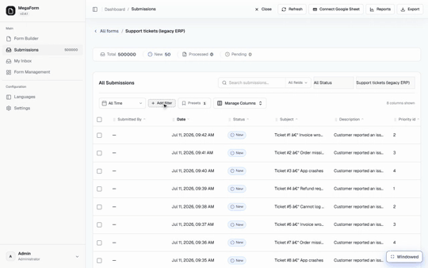

Submissions grid — search, filters and presets
Every form's submissions open in a data grid with a search box, composable filter chips, and saved presets. The recording below runs against a deliberately unfriendly dataset: a form bound read-only to an external ERP table with 500,000 rows — the grid pages through all of them server-side while you filter.

Steps shown
- The grid opens on Support tickets (legacy ERP) — the header counts Total 500000 and the footer pages Showing 1–50 of 500000 submissions.
- Add filter opens a command palette listing the form's fields (here they are the external table's columns — Subject, Status, Priority id, Customer email, …). Typing narrows the list.
- Pick Status — the editor offers the conditions (is / is not / is empty / is not empty) and, for a choice-like field, value pills taken from the live data (Closed, Resolved, Pending, Open, New). Pick Open, Apply filter.
- The chip Status is Open appears and the page badge shows 10 of 50 on this page — the chip refines the rows in view, instantly, without a round trip.
- Click Next: the grid fetches the next 50 of the 500,000 server-side (Showing 51–100 of 500000) and the chip stays applied to the new page.
- Presets → Save current filters as preset → name it — the preset appears in the list and the badge increments. A preset restores the whole filter configuration in one click.
What is what
| Piece | Behaviour |
|---|---|
| Search box + scope | Free-text search with a per-field scope selector (All fields, or a single field such as Subject). |
| Filter chips | Field + condition + value, built from the Add filter palette. Multiple chips combine; each chip removes with its ×. Chips filter the rows currently in view, instantly. |
| Paging | Server-side — 50 rows a page, whatever the total. The 500k demo table pages exactly like a 50-row form. |
| Presets | Named, saved filter configurations, listed with their filter count. Save the current chips, or load one back later. |
| Manage Columns | Choose and order the visible columns. |
| Export / Reports / Connect Google Sheet | The toolbar above the grid — exports honour the current form. |
About that 500,000-row table
The demo form is not storing half a million submissions in MegaForm — it is bound to an existing
SQL table (dbo.SupportTickets in a legacy ERP database) in read-only mode, and the submissions
grid treats it like any other form: same paging, same chips, same presets, with the table's own
columns appearing as filterable fields. Pointing a form at a customer's existing table is its own
feature — the grid simply doesn't care where the rows come from.
Next steps
- Reading Data — querying submissions from code with the SDK.
- Approval Workflows & Inbox — routing new submissions to people.